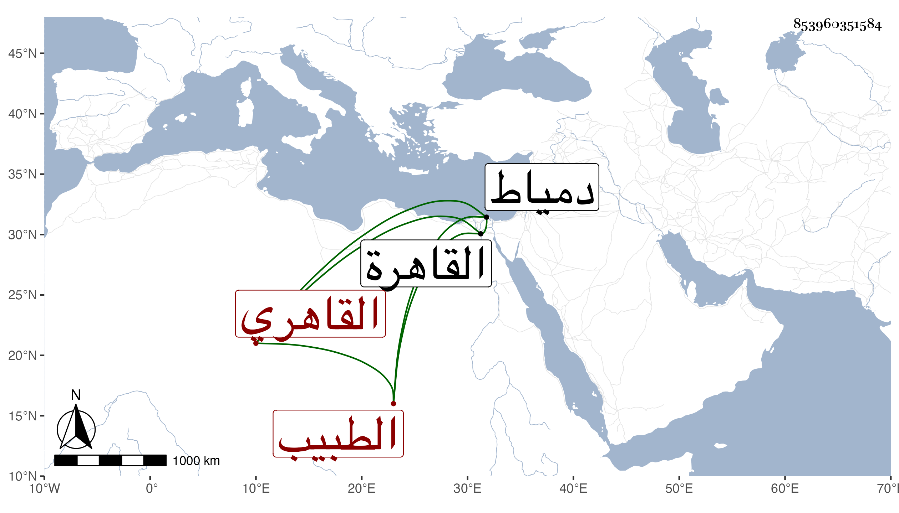

0902Sakhawi.DawLamic.ITO20230111-ara1.EIS1600.853960351584
Biography ID: 853960351584
326
محمد بن إسماعيل بن إبراهيم أبو الوفا القاهري الطبيب ويعرف بوفا . ولد بعد الثلاثين وثمانمائة بالقاهرة ، ونشأ بها وتدرب في الطب بخاله الشهاب أحمد بن خليل وناصر الدين بن البندقي ، وصار من ذوي النوب بالبيمارستان ممن يشار إليهم بالبراعة والمتانة وخفة الوطأة والتدبر في العلاج ، وقد حج غير مرة وجاور مرتين ودخل دمياط وربما لاطفني واشتد حرصه على كتابة الخصال الموجبة للظلال من تأليفي .
